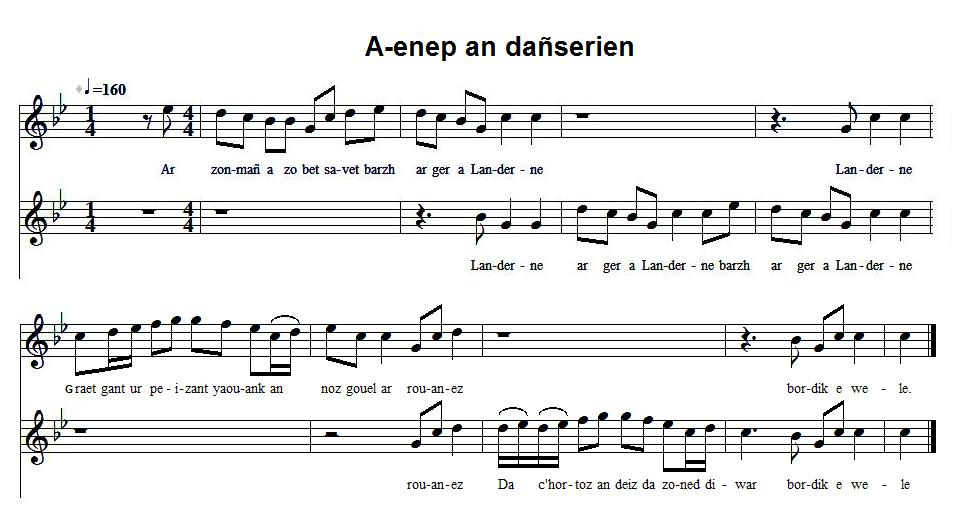
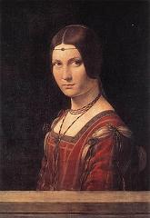
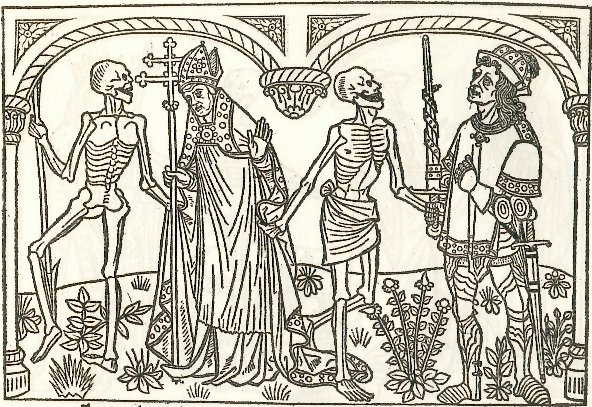

A-enep an dañserien
Contre les danseurs
Versus dancers
Chant collecté par Théodore Hersart de La Villemarqué
dans le 1er Carnet de Keransquer (p. 245).

Mélodie: "Kanenn evit dañsal"
|
A propos de la mélodie: Inconnue. Remplacée ici par un air extrait de "Trente chansons populaires de Basse-Bretagne", recueil de Bourgault- Ducoudray paru en 1885. L'arrangement est celui donné par M. Pierre Quentel sur son site (cf "liens"). Les paroles données par Bourgault- Ducoudray se limitent à: "E studi beleg me zo bet/ 'Barzh e Gwengamp e Sant-Brieg (bis)/ Tra la la". Bibliographie On trouve la traduction française de ce texte dans "La légende de la mort", le fameux ouvrage d'Anatole Le Braz publié en 1928, chapitre 120, sous le titre "La danse de l'enfer (chant populaire)". Le texte est suivi de la mention: "(Chanté par la vieille Berruchen, Paimpol)". Remarques Dans la chapelle de Kermaria-an-Isquit en Plouha est une curieuse peinture murale représentant une danse macabre de quarante [47] personnages de tout rang. Une inscription en vers [français], sous forme de dialogue entre le mort et le vif est tracée sous chaque groupe. La Villemarqué ne pouvait pas faire ce rapprochement: Si l'on admet que la danse macabre de Plouha a été exécutée entre 1488 et 1501, elle a été badigeonnée au 18e siècle et ne fut redécouverte qu'en 1856, par Charles de Taillart. Elle était apparemment en bon état de conservation (mais, depuis, elle a beaucoup souffert de l'humidité). "La danse macabre prend le plus souvent la forme d'une farandole. En-dessous ou au-dessus de l'illustration sont peints des vers par lesquels s'adresse la Mort à sa victime, souvent d'un ton menaçant et accusateur, parfois sarcastique et empreint de cynisme. Puis suit la supplique de l'Homme, plein de remords et de désespoir, mendiant la pitié. Mais la Mort entraîne tout le monde dans la danse: de l'ensemble de l'hiérarchie cléricale comme le pape, les cardinaux, évêques, abbés, chanoines, prêtres, en passant par les représentants du monde laïque, les empereurs, rois, ducs, comtes, chevaliers, médecins, marchands, usuriers, voleurs, paysans et jusqu'à l'enfant innocent. La Mort ne regarde ni le rang, ni les richesses, ni le sexe, ni l'âge de ceux qu'elle fait entrer dans sa danse. Elle est souvent représentée avec un instrument de musique. Cette caractéristique appartient au riche répertoire de la symbolique de la Mort et apparaît dès les débuts de la danse macabre. L'instrument évoque le côté séducteur, attirant, un peu diabolique du pouvoir d'enchantement de la musique." |
About the tunes Unknown. Replaced here by an air drawn from "Thirty folk songs from Lower Brittany", a song collection edited by Bourgault-Ducoudray in 1885. The arrangement was found at M. Pierre Quentel's site (see "Links"). The lyrics printed by by Bourgault-Ducoudray are limited to "E studi beleg me zo bet/ 'Barzh e Gwengamp e Sant-Brieg (bis)/ Tra la la". Bibliography A French translation of the text below is given in "The Legend of Death", Anatole Le Braz' most famous work, published in 1928, in chapter 120 titled "The dance of Hell, a folk song". It is followed by the note "Sung by the old woman Berruchen, in Paimpol". Remarks In the chapel at Kermaria-an-Isquit en Plouha, there is a curious wall painting representing a dance of death, a party of forty [in fact, 47] characters of all ranks and positions. A [French] verse inscription which reads as a dialogue between the same person, dead and alive, is painted underneath each figure. La Villemarqué could not make this parallel. We may take it for granted that the fresco was painted between 1488 and 1501 and covered by a coat of whitewash in the 18th century. It was not until 1856 that it was discovered by Charles de Taillard. It was in a fairly good state of upkeep (but suffered much, since then, of moisture). "The Dance of Death motive often takes the form of a farandole. Below or above the pictures are painted verses by which Death addresses its victims. It often talks in a threatening or accusing, if not cynical or sarcastic tone. Then comes the plea of Man, full of remorse and despair, crying for mercy. But Death leads everyone into the dance: from the whole clerical hierarchy (Pope, cardinals, bishops, abbots, canons, priests), down to the most humble representatives of the laic world ( from emperors, kings, dukes, counts, knights, doctors, down to merchants, usurers, robbers, peasants, and even innocent children). Death does not care for social position, riches, sex, or age of those it leads into its dance. The Death figure is often represented playing a musical instrument. This feature has symbolic import and appears at the very outset of the Dance of death paintings. This instrument means temptation, due to the enthralling power of music, of truly devilish nature. Sirens' song, Hameln Flute player, etc. are as many instances of Death charming mankind with its lethal music..." |
|
BREZHONEK p. 245 1. Ar zon-mañ a zo bet savet 'barzh ar ger a Landerne [Landreger] Graet gant ur peizant yaouank, an noz gouel ar rouanez, Da c'hortoz an deiz da zonet, e-war bordik e wele. 2. Ober a ra prederiñ mat, e oa erru Meurlarjez (div w.) Vit e teue an dud yaouank d'an dañsoù d'an aot d'ar c'he, 3. Gant o dilhad kaer dimodest, c'hoefoù kaer a dantelez (div w.) O zut a vo er ger marteze o do kalz a dienez. 4. Livaj ruz hag ar medailhoù a lakaont ouzh o bizaj (div w.) A vo kiriek d'e bezhañ daonet, hag ur wech evel Judaz. 5. Goap a rit deus ar veleien, dañsal a rit er bed-mañ (div w.) Barzh ar bed all a reot ivez, klevout a reot bremañ: 6. - Sentit ouzhin, merc'hed yaouank, torrit ar melezour-se Sentit ouzhin, merc'hed yaouank, ha na sellit mui ennañ. An diaoul a zo eo an toueller, ne glask nemed hon tromplañ 7. Me n'ho telc'hin da Bariz, na kenebeut da Rouan, (div w.) Evit choaz deoc'h ur melezour, n'ho lezin ket pell en poan. 8. Me n'ez in ket pelloc'h ganeoc'h, pelloc'h eget ar garnel (div w.) Evit darempred ar relegoù: ur wech red a vo mervel! 9. Ar relegoù a zo ennañ, lakaet en noz hag en deiz, Kollet gante o dilhat kaer, o kened, o douarn gwenn, O eneoù n'ouzhon pelec'h 'maint, nag amañ tavan a-grenn. KLT gant Christian Souchon Les médailles pendant sur le visage dont parle la strophe 4 sont-elles l'équivalent du bijou suspendu à une chainette qui barre le font de cette dame peinte par Léonard de Vinci entre 1495 et 1497 et que l'on peut admirer au Musée du Louvre à Paris? Cette mode a été reprise en pleine période "Néo-renaissance", sous Charles X (1824-1830). selon la référence que l'on retient, ce chant était soit très ancien, soit tout récent, quand La Villemarqué l'a inscrit dans son carnet. |
TRADUCTION FRANCAISE p. 245 1. Dans la ville de Tréguier [Landerneau] je fis cette chansonnette, Moi qui suis jeune paysan, dans la nuit où s'apprête Le jour des rois, avant l'aurore, assis sur la couette. 2. Quand arrive mardi-gras, de réfléchir il importe (bis) Aux jeunes gens qui vont danser sur les quais de la côte, 3. Avec leurs habits insolents, leurs coiffes de dentelle (bis) Eux dont, peut-être, les parents souffrent de faim cruelle. 4. Le fard rouge, les médaillons dont s'ornent les visages, (bis) Les voueront au sort de Judas: l'éternel esclavage. 5. - Vous vous moquez des prêtres et dansez dans ce bas monde: (bis) Dans l'autre aussi, vous danserez! Souffrez que je vous gronde! 6. Jeunes filles, brisez donc ce miroir qui vous insulte! Jeunes filles, écoutez-moi! En vain on le consulte: Son reflet c'est un séducteur, le diable qui le sculpte. 7. Pour choisir un miroir fidèle, à quoi bon vous conduire (bis) A Paris ou bien à Rouen? Un instant va suffire. 8. Suivez-moi! Nous n'irons pas loin. Allons à l'ossuaire (bis) Rendre visite aux ossements, notre étape dernière! 9. Car les ossements qu'ici, jour après jour, l'on entasse, Ont tous perdu leurs beaux atours, mains blanches, nobles faces. Leurs âmes, où sont-elles? Du reste je vous fais grâce... - Traduction Christian Souchon (c) 2015  La Belle Ferronnière de Léonard de Vinci |
ENGLISH TRANSLATION p. 245 1. The ditty you're about to hear, it was made in Tréguier town A young country lad, on the eve of Twelfth Night, has put it down Sitting on the edge of his bed, waiting for the day to dawn. 2. O'er the import of Twelfth Night feast the lad started to ponder(twice) In dancing would indulge the youth on the bank of the river. 3. All of them in gorgeous attire and precious lace headdresses (twice) While their parents must pay with fast for these extravagances. 4. They rouge their cheeks, adorn their brows with golden chains and medals (tw.) Through which they'll be, like Judas once, enslaved by the devils. 5. - You make fun of priests and divines: in this lesser world you dance (twice) How you'll dance in the otherworld, I can tell you in advance: 6. Listen to me, ye, young girls all, shatter your looking glasses! Listen to me, ye, young girls all, at them send no more glances! The devil with his knavish tricks, just deceiving you chances. 7. No need to take you to Rouen, nor to take you to Paris: (twice) You won't have to go far for a new mirror, it's a promise. 8. You need not go any further than the old ossuary (twice) Just consider all the bones there: they'll answer your enquiry! 9. The bones that are, day after day, decaying heaped up therein, They are divested of their pomp, and by no means good looking, Do not ask me where their souls are! For now I shall stop singing. - Translated by Christian Souchon (c) 2015 Are the medals adorning the brows mentioned in stanza 4 equivalent to the jewel hanging on a chain across the forehead of the lady on the portrait painted by Leonardo da Vinci between 1495 and 1497, which is on display at the Louvre Museum? This adornment was anew fashionable during the "New-renaissance" period under King Charles X (1824-1830). Depending on the reference considered as relevant, the song at hand was either very old, or very new, when La Villemarqué recorded it in his copybook. |

Tiré du site "www.lamortdanslart.com/danse/France/Paris/dm_paris04.html"